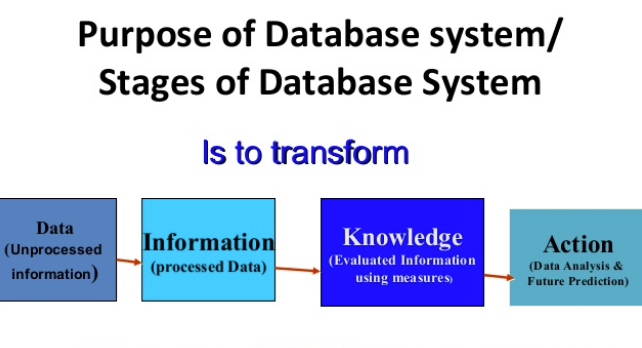
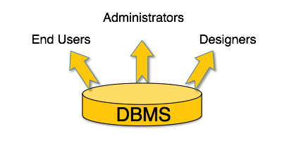

- AGOUA YAO ANGE ALEX
-

-

-


L'ensemble SGBD et base de données est destiné à permettre le stockage de données d'une manière offrant de nombreux avantages par rapport à un enregistrement conventionnel dans des fichiers. Il permet d'obtenir et de modifier rapidement des données, de les partager entre plusieurs usagers. Il garantit l'absence de redondance, l'intégrité, la confidentialité et la pérennité des données tout en donnant des moyens d'éviter les éventuels conflits de modification et en cachant les détails du format de fichier des bases de données.

Les systèmes de gestion de base de données sont des logiciels universels, indépendants de l'usage qui est fait des bases de données. Ils sont utilisés pour de nombreuses applications informatiques, notamment les guichets automatiques bancaires, les logiciels de réservation, les bibliothèques numériques, les logiciels d'inventaire, les progiciels de gestion intégrés ou la plupart des blogs et sites web. Il existe de nombreux systèmes de gestion de base de données. En 2008, Oracle détenait près de la moitié du marché des SGBD avec MySQL et Oracle Database. Vient ensuite IBM avec près de 20 %, laissant peu de place pour les autres acteurs.